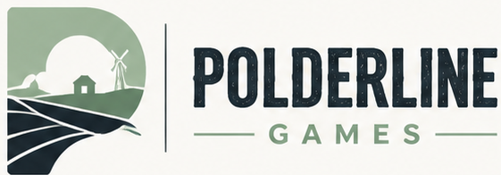
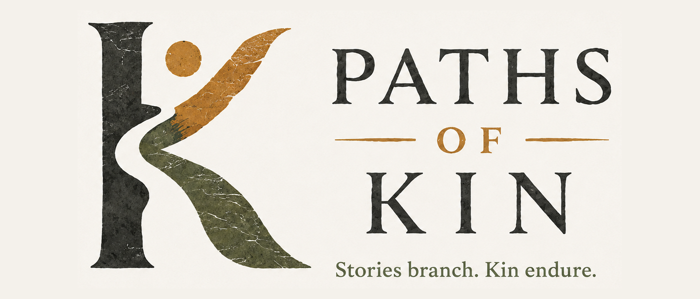

Independent game studio · Netherlands
Games rooted in people, place and consequence.
Polderline Games is an independent game studio from the Netherlands. We are currently developing Paths of Kin.
The studio
Polderline Games
We are building thoughtful games about people navigating living systems, difficult choices and worlds that remember what happened.
Our current project is Paths of Kin, a turn-based survival, ecology and cultural-discovery game.

Currently in development
Paths of Kin
Guide an ancestral lineage through a changing prehistoric world. Read the landscape, assign daily work, care for vulnerable group members, experiment with natural materials and preserve useful knowledge through teaching.
Survival is not only about gathering enough food — it depends on understanding animals, managing risk and deciding what your lineage will remember.
Follow development on itch.io →Follow development
Find Polderline Games


Contact